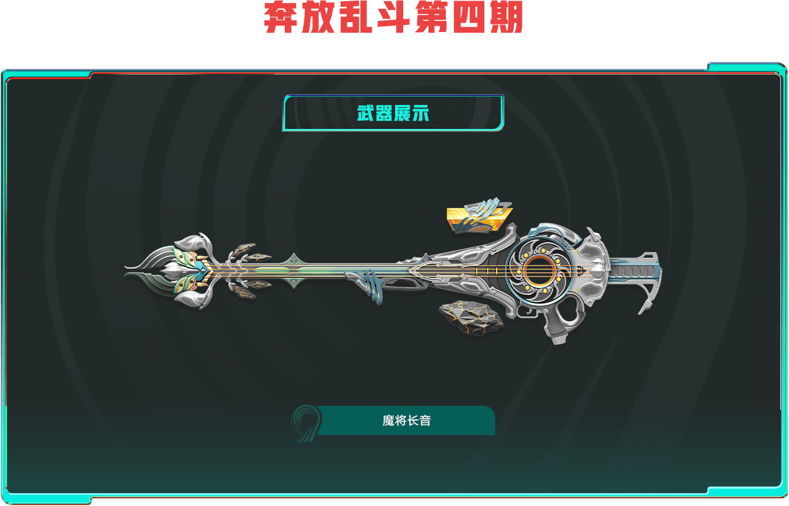
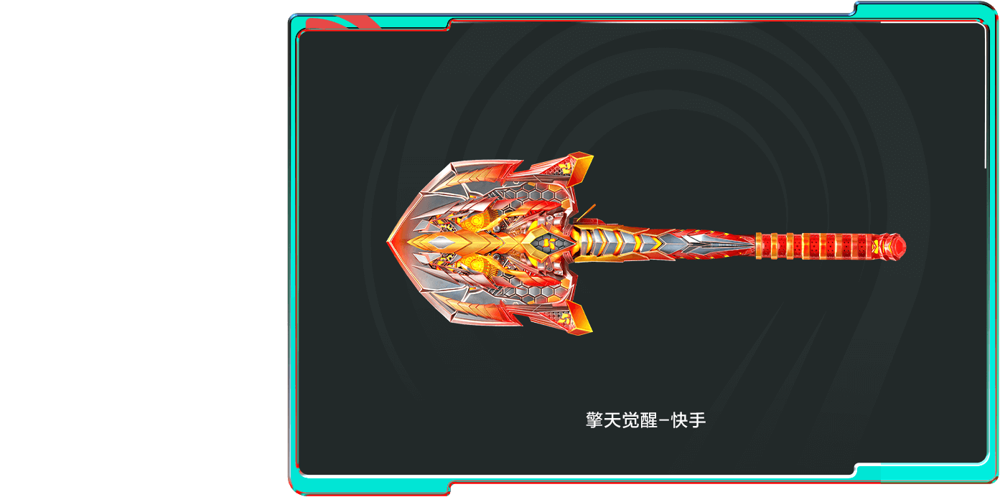
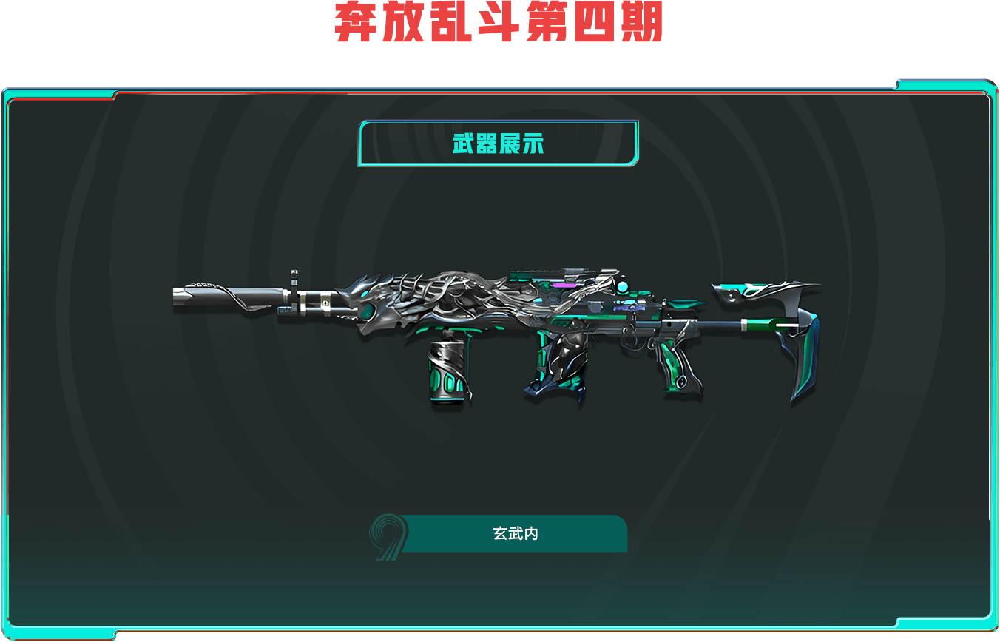
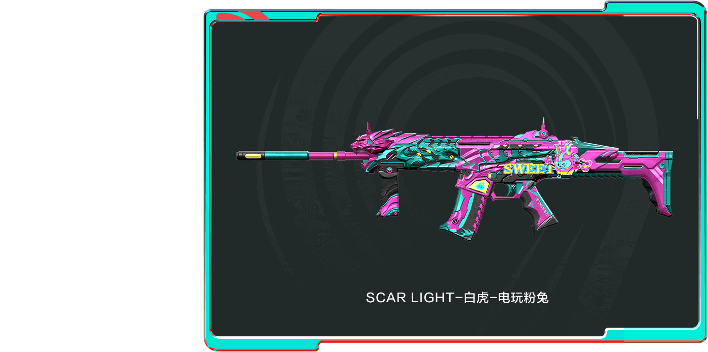
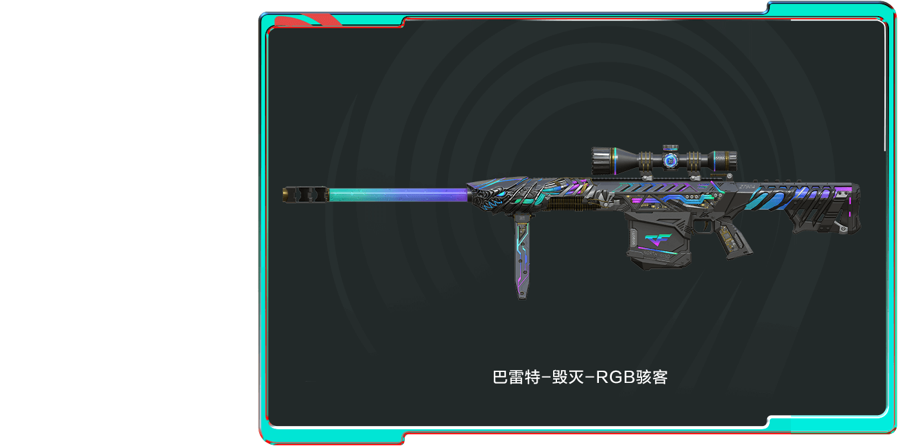
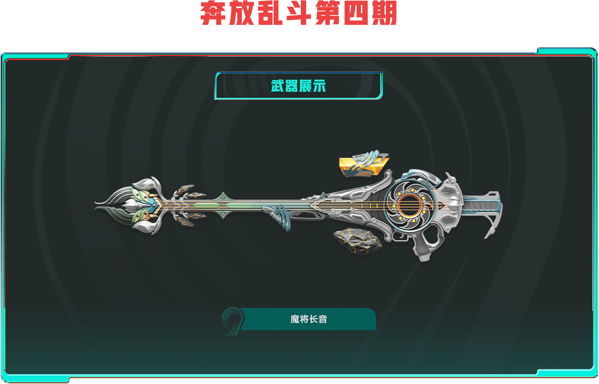
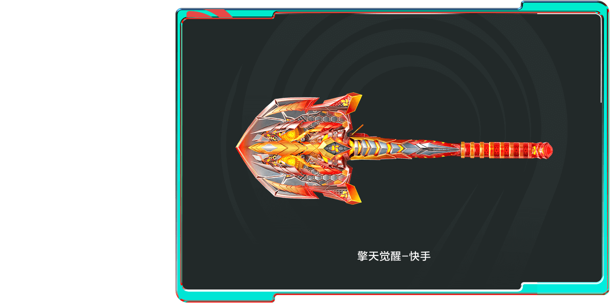
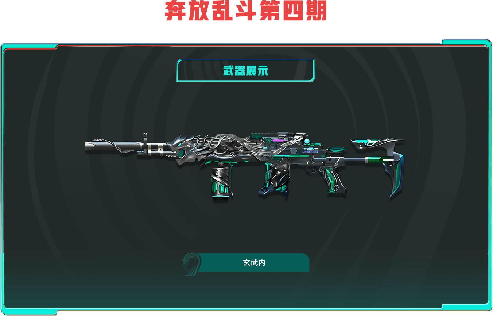
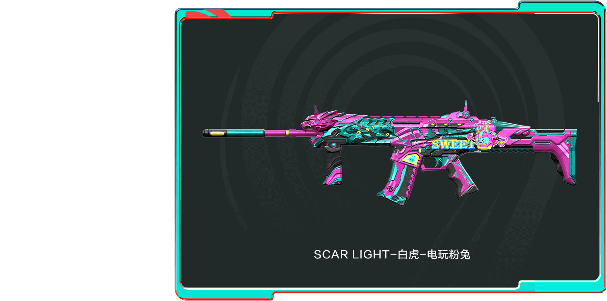
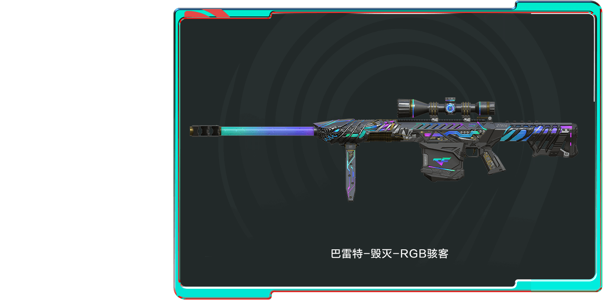

活动详情：
为了回馈玩家，提升玩家活跃,现在推出活动领取上面图片各种武器的CDK兑换码，用户可自愿通过以下方式进行获取随机CDK码进行游戏内道具兑换。
领取成功后请点击此处跳转到CDK兑换页面，或自行去游戏内CDK兑换页面进行兑换。
注意：需要付款的皆骗子切勿上当受骗！活动时间2025年1月到3月
领取成功后请点击此处跳转到CDK兑换页面，或自行去游戏内CDK兑换页面进行兑换。
注意：需要付款的皆骗子切勿上当受骗！活动时间2025年1月到3月
领取方法：
1、截图保存下面二维码(多台手机的可以直接用另外一台进行扫一扫)
1、在应用商店下载快手极速版并注册登录
2、在主界面右滑点击扫一扫
2、在主界面右滑点击扫一扫
选择刚刚保存的二维码进行扫描即可。